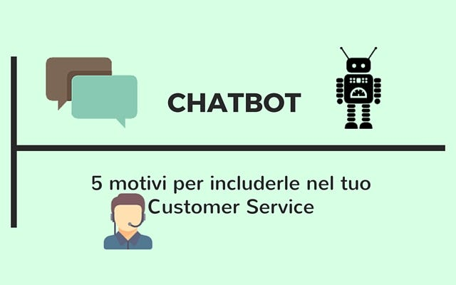
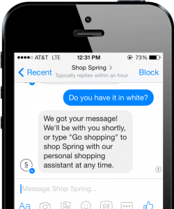
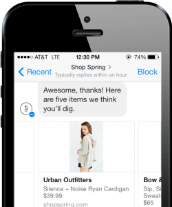
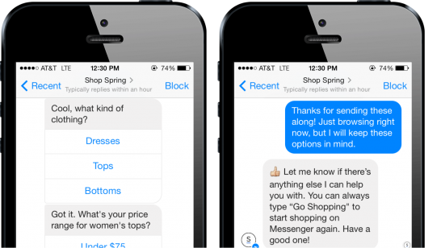

Chatbot: 5 motivi per usarle nel Customer Service

Viviamo sicuramente un momento estremamente interessante per il campo del customer service: le modalità con cui vengono erogati i servizi di assistenza clienti ridefiniscono sempre più il rapporto cliente-azienda, cambia il modo in cui viene concepito il Customer Care che integra sempre più e sempre meglio nuovi e moderni strumenti.Ormai, si sa, l’assistenza clienti è multicanale: vi è più di un modo per interagire con un’azienda e un brand e si passa dai classici mezzi quali email e telefono, ai social network, sino ad arrivare alle app come Whatsapp. Gli sviluppi più interessanti riguardano, però, le chatbot. Come definirle?
In un articolo, The Guardian ha descritto le chatbot come “programmi che imitano le conversazioni con persone reali utilizzando l’intelligenza artificiale. Le chatbot trasformano il modo in cui si interagisce con il web”
Nell’ambito del customer service, le chatbot utilizzano il potere crescente dell’intelligenza artificiale per permettere agli utenti di interagire con un’azienda esattamente come farebbero con un addetto all’assistenza clienti.
Ma quali sono i benefici che si possono ottenere dalle chatbot? Vediamone alcuni.
Le chatbot sono il nuovo trending topic
Chris Messina, developer che ha inventato l’usatissimo hashtag per le conversazioni in Twitter e poi passato a Uber, famoso servizio di car pooling di San Francisco in qualità di Developer Experience Lead nel gennaio 2016 — ha scritto un articolo, proprio nello stesso mese, nel quale preannunciava l’ascesa di qualcosa che lui definiva conversational commerce, descrivendolo come “l’utilizzo di chat, servizi di messaging o altre interfacce di linguaggio naturale per interagire con le persone, brand, o servizi e bot che fino a questo momento non hanno avuto un vero posto nel contesto bidirezionale e asincrono del messaging”.
Secondo Messina il risultato è il conversare con le aziende tramite Facebook Messenger, Whatsapp, Telegram, Slack e trovarlo assolutamente normale.
La sua visione di conversational commerce ben si inserisce quest’anno con l’esplosione prevedibile delle chatbot. Piattaforme di messaggistica come Facebook Messenger hanno investito recentemente in maniera imponente sulle chatbot, introducendo anche negozi virtuali di bot (bot stores) ai quali gli sviluppatori possono accedere, codificare e costruire da soli una chatbot a loro gusto.
La reazione iniziale alle chatbot è stata per certi versi abbastanza tiepida — la loro abilità nel gestire il linguaggio naturale a volte lascia a desiderare — ma è bene ricordare che siamo solo agli inizi di una appassionante evoluzione delle comunicazioni B2C.
In effetti, Gartner multinazionale nella consulenza strategica, ricerca e analisi nel campo dell’Information Technology, fece una predizione alcuni anni fa asserendo che nel 2020, l’85% delle interazioni con i clienti sarà gestita senza l’apporto umano.
L’ascesa delle chatbot si incastra perfettamente in questa predizione.
I clienti si dimostrano aperti all’idea delle chatbot
Spesso, il punto su cui si dibatte di più, quando si parla di automatizzazione dei servizi di customer care è incentrato sul “tocco umano”, ovvero quel contatto che solo un operatore in carne e ossa può stabilire e che un bot non sarebbe in grado di dare; tuttavia una ricerca ha dimostrato che ben il 40% dei clientipreferisce soluzioni self-service, soluzioni in cui in poche parola se la sbrigano da soli.
In più, Zendesk ha trovato che più del 50% dei clienti ritiene importante il fatto stesso che loro possano risolvere i propri problemi da soli senza dover aver a che fare con addetti all’assistenza clienti.
I clienti sono inoltre molto interessati nell’interagire con le aziende tramite messaggi (e già lo stanno facendo). Addirittura uno studio commissionato da OneReach (piattaforma di comunicazioni in cloud) rivela che il 64% dei clienti preferirebbe scrivere un messaggio piuttosto che chiamare un’azienda e alcuni dati rilasciati durante la F8 Conference, Facebook Developer Conference, hanno dimostrato che più di un bilione di messaggi sono stati inviati alle aziende ogni mese.
Combinando i due approcci, self-service e messaggistica/sms, ecco che si arriva alle chatbot.
La cosa interessante e che queste fanno leva, alla fine, su un canale che i clienti già stanno utilizzando (messaggistica istantanea, sms) integrandolo con il loro desiderio di esperienza self service.
Le chatbot sono più veloci di un operatore. E insieme?
Le chatbot sono sicuramente più veloci di un operatore a parità di tempo; questo è abbastanza ovvio poiché la capacità di processare le chiamate in entrata dagli operatori è comunque più limitata per motivi legati al tempo dedicato alla singola interazione, che è molto variabile.
È chiaro che poi il fattore che fa la differenza sull’utente finale è la qualità della risposta. Spesso si parla delle “freddezza” delle interazioni che avvengono con un sistema automatizzato, rispetto al “contatto caldo” che si può venire a creare con un operatore.
Ma se si parla di efficienza e velocità, le chatbot, tuttavia, si dimostrano ottime nell’erogare una buon servizio di customer care: i clienti possono digitare la loro domanda e ricevere una risposta praticamente immediatamente, il tutto è basato su una logica pre-programmata.
Sul fronte del costo, poi, le chatbot sono più economiche.
Tuttavia la parte interessante di tutto questo è che prendendo l’aspetto migliore di entrambi, ossia la velocità garantita dalla chatbot e il contatto caldo dell’operatore, e combinandoli si può arrivare praticamente ad una perfetta customer care.
Qui sotto propongo un esempio che riporta una esperienza di customer care attraverso Facebook Messenger con il negozio Spring.
La chatbot di Spring chiede ad esempio se l’utente stia cercando articoli maschili o femminili; in seguito chiede quale tipo di abito si vuole cercare, tutto in rapida successione. In poco tempo ci si trova a guardare tutti i risultati in maniera veloce e facile.

Esattamente come nell’esempio, la maggior parte delle persone utilizzerà e già utilizza le chatbot per richieste molto semplici, ma alcune volte i clienti potrebbero avere richieste più complesse di quanto un bot possa capire. Nell’esempio di prima, con Spring, l’utente ha trovato un cardigan che gli è piaciuto ma voleva anche sapere se fosse disponibile in un colore differente. Quando ha fatto la richiesta alla chatbot per verificare se vi fosse il colore bianco, il bot in maniera molto gentile ha risposto che sarebbe tornato presto con una risposta.

Partendo da una conversazione con un bot per arrivare poi a scrivere ad un operatore per le richieste più specifiche è un buon modo per garantire un’ottima customer experience ad ogni cliente.
Le chatbot possono incorporare media di ogni tipo
Tutto ciò che concerne i contenuti visuali — quindi immagini, foto, disegni — hanno un altissimo impatto nell’essere umano; infatti processiamo le immagini 60mila volte più velocemente di quanto facciamo con i testi.
Le immagini sono una veloce e facile via per comunicare informazioni, per cui è interessante il fatto che le chatbot possono incorporare media come immagini e GIF nella conversazione.
Anche se le chatbot principalmente comunicano tramite testo scritto, le immagini però aiutano le chatbot a farle sembrare più umane; inoltre mostrano un prodotto che è più facile da far vedere che descrivere.
Tornando all’esempio dell’e-shop di Spring, una volta che si scrive che tipo di prodotti si desidera cercare, il bot risponde con varie opzioni con immagini sulle quali è possibile cliccare ed espandere per avere più informazioni.
È quasi indistinguibile da un essere umano (quando il tutto è scritto correttamente)
Il timore più grande sulle chatbot riguarda il fatto di avere con loro una user experience fredda, a tratti goffa (con risposte non troppo pertinenti) e robotica. In ogni caso i bot possono restituire una user experience senza troppi intoppi, umana quando scritta correttamente.
Dipende concretamente dal tipo di comunicazione del proprio brand/azienda, se formale o informale.
Se il brand usa solitamente un tono informale, il linguaggio quotidiano e il fatto di utilizzare nelle chatbot il “noi” o “io” funziona sicuramente.
Al contrario, se l’azienda ama i toni formali, è preferibile la terza persona e un linguaggio non troppo quotidiano.
Tornando al caso di Spring, il tono utilizzato era chiaramente sull’informale: per cui quando il bot risponde con “Hey ciao” e parla di sé con il “noi”, si percepisce ad esempio più umanità. È probabile che quasi la differenza non si noti tra la risposta del bot (a sinistra) e la risposta dell’operatore (destra) quando entra nella conversazione.

I brand si dimostrano sempre più recettivi nell’utilizzare le chatbot nelle loro comunicazioni verso il cliente.
I mesi a venire sono sicuramente determinanti per capire quanto queste possano realmente giocare un ruolo chiave nell’erogazione del customer service; i benefici appena elencati chiariscono intanto sicuramente due punti: l’ascesa indiscutibile delle chatbot e il loro grande potenziale.
Valentina Mangia